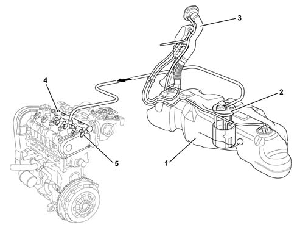
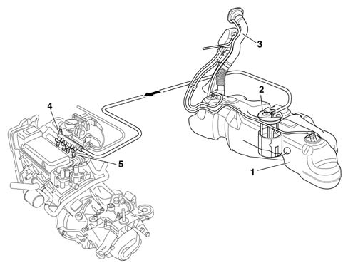
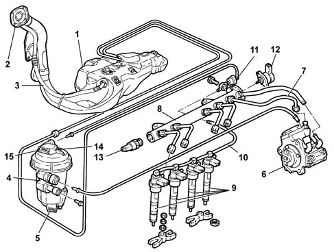

Introduction - FUEL TANK AND PIPES
- Path
- Descriptions > 10 ENGINE > 1040 FUEL TANK AND PIPES > Introduction - FUEL TANK AND PIPES
- Kind
- system description
- Applies to
- all engines; all production periods
- Interactive page
- https://sloeber94.github.io/elrnDB-lYpsln/en/#/2429833
Applies to: engines: 1.2 8v; all production periods; only with equipment: Euro 3
The fuel system is the 'returnless' type, i.e. with only one connecting pipe between the fuel tank and engine, on account of which the return pipe, the filter and the pressure regulator have been dispensed with; the latter two components are incorporated in the pump assembly.
This permits the following:
- to minimize the possibility of the vehicle catching fire in the event of an accident
- to reduce fuel vapour emissions into the atmosphere.
The fuel tank, located in front of the rear axle, is made from a plastic material with high mechanical strength.
Applies to: engines: 1.2 16v; all production periods; only with equipment: Euro 3
The fuel system consists of the components illustrated in the diagram.

1, Fuel tank 2, Complete immersed pump assembly 3, Fuel filler pipe 4, Fuel manifold 5, Injectors (see 1056)
Applies to: engines: 1.4 16v; all production periods
The fuel system consists of the components illustrated in the diagram.
1, Fuel tank 2, Complete immersed pump assembly 3, Fuel filler pipe 4, Fuel manifold 5, Injectors (see 1056)
Applies to: engines: 1.3 JTD; all production periods
This fuel injection system uses an electronically-controlled high injection pressure and a fuel supply method achieved through a main injection and one or several pilot injections (depending on the engine operating conditions) electronically controlled by the injection control unit through the injector. This system can carry out up to five injections per cycle (depending on the engine operating conditions).
The pressure value represents one of the fundamental parameters for optimum fuel consumption and exhaust fumes.
Management with several pilot injections makes pre-heating the combustion chamber possible, so preventing the pressure preak caused by rapid combustion, ensuring smoother operation and further reducing emissions.
The adjustment of the injection pressure is made possible thanks to the construction features of the system which has a pressure pump, pressure regulator, pressure sensor and separate injectors, all managed by a control unit. In this way the injection pressure does not depend on the engine rotation speed
The main features of the fuel supply system are:
- high injection pressure (up to 1400 bar);
- possibility of modulating the injection pressure from 150 to 1400 bar in all engine operating conditions
- introduction of fuel up to 50 mm3/cycle at a speed of between 100 and 5200 rpm;
- precise injection control, for both injection advance and duration of injection
- one or two pilot injections, before T.D.C., managed in relation to the engine rpm and load which allows the pressure to be distributed evenly in the combustion chamber with a reduction in the noise level.
Applies to: engines: 1.2 8v; all production periods; only with equipment: Euro 3
.

1, Fuel tank 2, Complete immersed pump assembly 3, Fuel filler pipe 4, Fuel manifold 5, Injectors (see 1056)
Applies to: engines: 1.3 JTD; all production periods
The fuel supply system is divided into a low pressure circuit and a high pressure circuit.
The low pressure circuit consists of:
- an auxiliary electric pump immersed in the tank
- the fuel filter with internal cartridge;
- the fuel return manifold pipe
- the connecting pipes .
The high pressure circuit consists of:
- the pressure pump
- the single fuel manifold pipe with integrated pressure regulator and pressure sensor;
- injectors;
- the connecting pipes.

1 - Fuel tank 2 - Fuel filler pipe 3 - Reflux pipe 4 - Fuel filter 5 - Water in fuel filter sensor 6 - Pressure pump Characteristic of working principle1060 DIESEL FUEL INJECTION 7 - High pressure pipes 8 - Single fuel manifold pipe Characteristic of working principle 1060DIESEL FUEL INJECTION 9 - Injectors Characteristic of working principle1060 DIESEL FUEL INJECTION 10 - Pipe from injectors to fuel return manifold pipe 11 - Fuel return manifold pipe 12 - Pressure regulator Characteristic of working principle 1060DIESEL FUEL INJECTION 13 - Fuel pressure sensor Characteristic of working principle 1060DIESEL FUEL INJECTION 14 - Fuel temperature sensor Characteristic of working principle 1060DIESEL FUEL INJECTION 15 - Fuel heater Characteristic of working principle1044 FUEL CIRCUIT PUMP/AND DEVICES